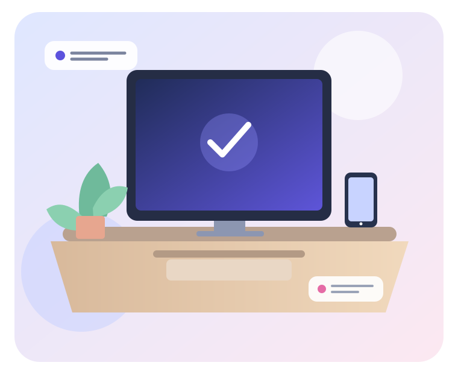

تعمیر و عیبیابی موبایل
بررسی مشکلات شارژ، باتری، کندی، حافظه و خطاهای نرمافزاری گوشی.
مشاهده خدمتاز تعمیر و رفع مشکلات فنی تا نصب نرم افزار, راه اندازی اینترنت و مشاوره خرید تجهیزات دیجیتال و خدمات دیگر; خدمت مورد نیازتان را به من بسپارید.
نمونه جستجو: وایفای ضعیف، لپتاپ، گیمنت

حوزه هایی که بیشتر نیازهای تکنولوژی روزمره را پوشش میدهند.
تعمیر، ارتقا و نگهداری سیستمهای رومیزی و لپتاپ.
۳ خدمتعیبیابی گوشی، راهاندازی و تنظیم لوازم هوشمند.
۳ خدمتمودم، وایفای و رفع مشکل اتصال در خانه و محل کار.
۳ خدمتنصب ویندوز، برنامهها و پشتیبانگیری از اطلاعات.
۳ خدمتکمک در انتخاب و خرید تجهیز مناسب نیاز و بودجه.
۳ خدمتپشتیبانی گیمنت، سیستم گیمینگ و فضای بازی.
۳ خدمتحسابها، ابزارهای کار آنلاین و راهنمایی استفاده.
۳ خدمتپشتیبانی از راه دور، امنیت دستگاه و آموزش کاربردی.
۳ خدمتبررسی مشکلات شارژ، باتری، کندی، حافظه و خطاهای نرمافزاری گوشی.
مشاهده خدمتنیازسنجی، مقایسه و بررسی گزینهها تا خریدی مطمئنتر انجام دهید.
مشاهده خدمتعیبیابی سیستمها، شبکه، ویندوز و تجهیزات جانبی برای گیمنت.
مشاهده خدمتراهنمایی و رفع مشکل با ارتباط از راه دور، در صورت مناسببودن مسئله.
مشاهده خدمتنصب تمیز ویندوز، درایورها و تنظیمات اولیه متناسب با دستگاه.
مشاهده خدمتتنظیم مودم و روتر، رمز، پهنای باند و جداسازی شبکه مهمان.
مشاهده خدمتخدمت را از فهرست پیدا کنید یا مشکل را با زبان خودتان بنویسید.
شرایط را بررسی میکنم و درباره روش، زمان و مراحل کار توضیح میدهم.
کار انجام میشود و نتیجه را برایتان توضیح میدهم.
با خود من صحبت میکنید، نه با واسطه.
اول مشکل را میفهمم، بعد راهحل میدهم.
پیشنهادها با بودجه و کاربری شما سنجیده میشود.
دلیل هر اقدام را به زبان ساده میگویم.
من مصطفی هستم؛ همراه شما برای حل مشکلات دنیای دیجیتال. از هفت سالگی , آغاز یک مسیر مادام العمر در دنیای فناوری; زمانی برایم فقط استفاده از دستگاه ها مهم نبود, بلکه همیشه میخواستم بدانم چگونه کار میکنند و چطور میشود از آن ها بهتر استفاده کرد. امروز, با تکیه بر سال ها همراهی با تکنولوژی, دانش فنی و تجربه ای که در این مسیر به دست آورده ام, تلاش میکنم تا مشکلات را دقیق بررسی کنم, راهکاری های مناسب را پیدا و انتخاب کنم و به دیگران کمک میکنم تا در دنیای دیجیتال انتخاب های آگاهانه تری داشته باشند.
بیشتر درباره منمشکل یا نیازتان را بنویسید؛ بعد از بررسی، مسیر مناسب را با هم مشخص میکنیم.